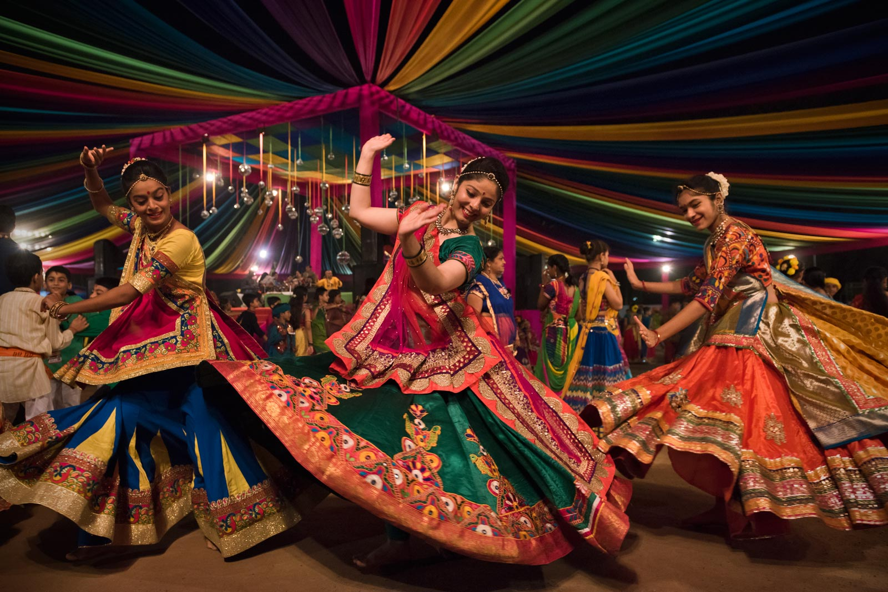
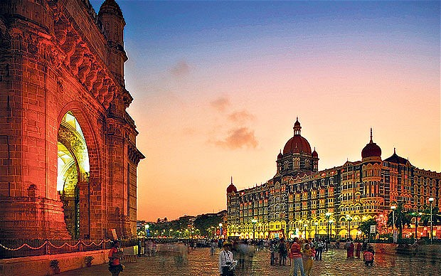

Welcome to Mumbai
Mumbai (bombay) it is captital of state maharashtra.Mumbai lies on the konkan coast on the west coast of india.
it is Country's financial and commercial center and its principal port on the arabian sea.
Tap here for reaching mumbai.
why to visit Mumbai??
for it's incredible beauty.
for it's amazing food.
for being part of it's culture.
*what it's like to visit mumbai.
You can visit to :
Gateway of India
Bandra Fort
Nariman Point
Juhu Beach
Haji Ali
Marine Drive
There are many ways to roamimg around city:
Mumbai darshan bus , which starts from victoria terminus and covers all main spots around city,
you can book bus ticket,s directly from ticket counter located near victoria terminus.
You can always try local train ride,which is famous traveling vehicle in mumbai.
You can try BEST buses which will direct you to your destination.
Uber and OLa are the best online options if you are new to this city.
this are some famous places to visit in mumbai.
*what will mumbai offer you from it's plate???
You can try to:
Batata Vada
The Bombay sandwich
Ragda pattice
Bhel Puri
Faluda
panipuri
this are some famous steet food dishes you must try..
Despite of this dishes:
You can always try restaurants around city ,which serves mumbai's Taste .
Mumbai is famous for it's street food. Must try mumbai's street food
Mumbai is food hub for its cultural maharashtrian food, we can find range of famous hotels around city, which serves maharashtrian food.
Dadar, Bandra , Victoria terminus this are some famous spots for trying variety of street food and restaurants.
*what is mumbai's culture..
Mumbai is famous for it's festival of light called, diwali you can visit mumbai during the month of octomber to november and experience beaty of this season.
during diwali mumbai street's are docorated with colors and lights and being part of this beaty is amazing experience.
Ganesh chaturthi festival is another big celebration in mumbai, where everyone worship idol of god ganesh ji, it is all about busy streets ,bands,rituals,dance and prosperous atmosphere.
you can being part this big festival by visiting mumbai during the month of august and september.
Nauratra utsav is another festival season which is celebrated for worshiping godess Durga maa, during this festival mumbaikar's enjoy Garba ras ,which is form of dance specially perform during nauratri,
you can experience this beauty by visiting Mumbai in month of octomber to november.

In mumbai it is Eid or Christmus,Mumbai is place where you find everyone celebrating every fest with there loved ones,
despite of there religion,or there beliefs,every moment mumbai celebrates like it's own, this is the beauty of mumbai.

This this our mumbai,what your waiting for pack your bags and explore it's beauty,and... don't forgot to write me here about, what is mumbai from your vision.